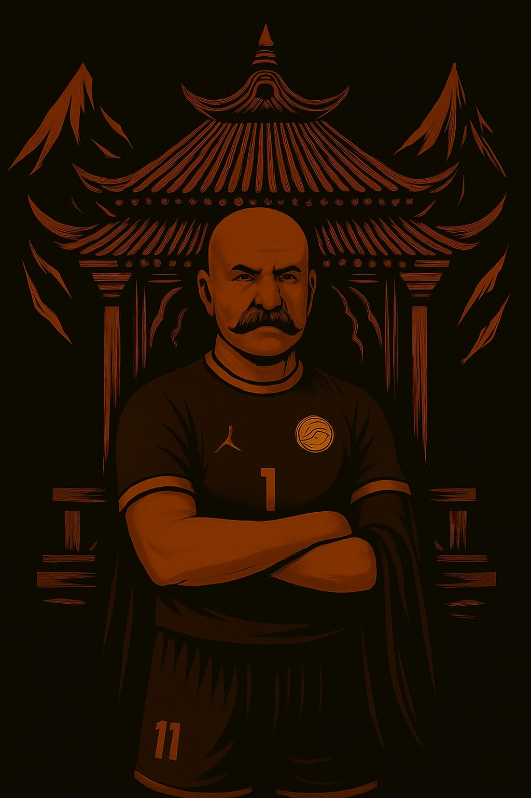

Le leggende e i maestri che guidano il nostro cammino
Mamba_nero30
Fabio Simplicio ğŸ‚
Esterno rapidissimo, buggatissimo e con un innato senso della difesa.
Membro attivo assiduamente dal 2020.
Membro onorario e Senatore a vita.
Se non fosse per lui il club non sarebbe mai diventato quello che è!
Grazie a quest'uomo i Monaci Shaolin hanno gettato le basi nel mondo del Competitive.
Giocatore che pesa 40kg da bagnato, la freccia nera, con la sua esultanza a foglia secca,le sue premonizioni, i suoi tiri dalla distanza e i suoi interventi difensivi, sarà sempre ricordato dal club per il suo spirito di squadra e cuore d'oro.
Attendiamo un suo ritorno un giorno:
"Ritorno al Futuro" 🔙
BAMBACIONE 🍔
"Mi dite Simplicio, Simplicio..fate giocare Simplicio".

Mish__97
UBALDO UBALDO 🥸
L'uomo dalle mille sfaccettature e capigliature!
Questo anziano COC è la vera leggenda del Club.
Membro onorario e Senatore.
Fin dagli albori della creazione del team nel 2018 lui è stato presente e costante.
Una creatura dal potenziale divino ✝️
Ha il potere di evocare San Pietro
Il nostro rematore di gondole Veneziano è un portento, nella visione e nella costruzione del gioco e amante del bel calcio.
Ormai stanco di sfornare assist si è ritirato nel suo paese in cerca di pace..per ora 👀
Onore alla celebre esultanza REMATORA!
Evento unico nel suo genere, solo pochi eletti lo hanno potuto gustare dal vivo.🚣🏻
LEGGENDA VIVENTE 🪶 📖
Maestro_Yoda02
LEGOLAS VERDEFOGLIA 🏹🍃
Leggenda del Club e Senatore.
Viene da terre lontane e boschi fantastici, a Latina, vicino Campo Boario per intenderci.
COC dall'incredibile visione e grande finalizzatore.
Membro onorario del Club dalla creazione nel lontano 2018.
Si ricordano le sue gesta e le sue imprese per la vittoria della Divisione 1 in 4 player con full CPU.
A volte si trasforma nei suo alter ego Gennaro Esposito, Beppe Vessicchio e Giovanni Motrombo, quando deve correre in aiuto a fare il Jolly.
Una Freccia in mezzo al campo e incitatore per i compagni di squadra.
"Legolas!! Cosa vedono i tuoi occhi da elfo?" 👀
TheSpartan333
AJEJE BRAZORF 🧱↪️🇩🇪
Honorable Mention per il Maestro!
Il mago dei German Cross 🪄
Uno dei TS migliori della storia del Club e non solo!
Terzino dall'innato posizionamento difensivo,e dall'astuta visione di gioco.
Verranno sempre ricordate le sue sovrapposizioni, incursioni e i cross germanici micidiali per servire Marian Zaharia nei tornei!
Un vero e proprio MURO!
Non il più skillato, è vero, ma quello con più classe di tutti!
Sempre presente, a patto che non ci sia LA MAGGGICA in TV! 🐺💛❤️
Verrà sempre ricordato dai suoi compagni di squadra per i pochi anni passati insieme, ma anni di grande qualità !
Tornerà mai? Non ci è dato saperlo per ora..
Noi ci crediamo ancora, chissà , forse un giorno Il Maestro farà ritorno e ci insegnerà il prossimo passo per arrivare al suo livello.
Semplicemente,
IL MAGISTER 🧑🏻‍🏫✨